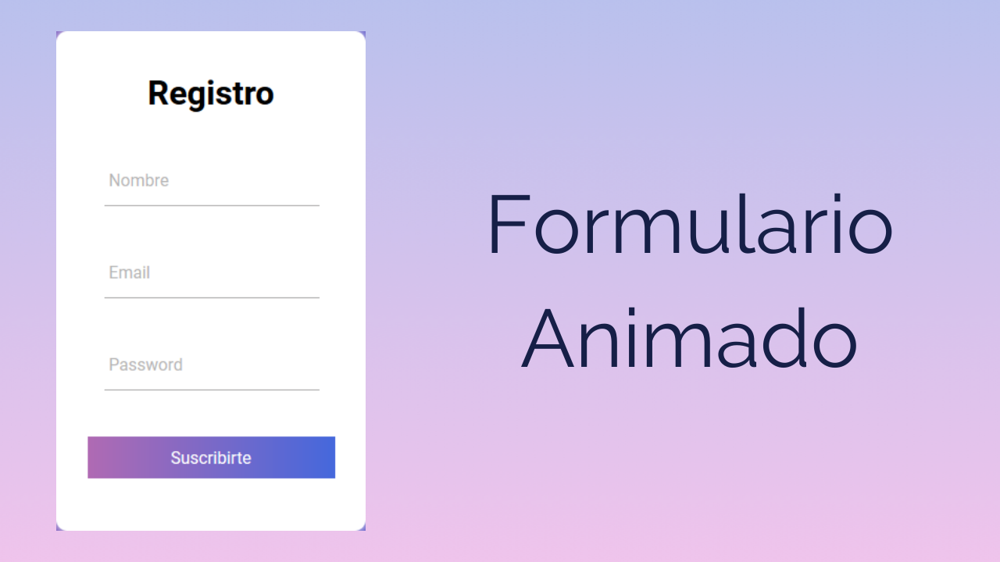

Estructura de interfaces web
Una interfaz web es: una estructura formada por una serie de elementos gráficos que permiten a los usuarios acceder a los contenidos de un sitio web. Haciendo un simil con un barco, podríamos decir, que son «los mandos e indicadores» que el autor de la web pone a nuestro alcance para poder «navegar» por el sitio web.


Formulario web
Un formulario web dentro de una página web permite al usuario introducir datos los cuales son enviados a un servidor para ser procesados. Los formularios web se parecen a los formularios de papel porque los internautas llenan dichos formularios usando casillas de selección, botones de opción, o campos de texto.

Usabilidad
La usabilidad web se refiere a la facilidad de uso que tiene una página o aplicación web. De esta forma los internautas interactúan con el sitio y consiguen sus objetivos de forma sencilla, intuitiva, agradable y segura.

Diseño Responsivo
El diseño web adaptable, es una filosofía de diseño y desarrollo cuyo objetivo es adaptar la apariencia de las páginas web al dispositivo que se esté utilizando para visitarlas